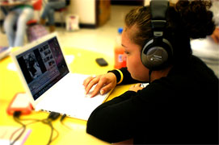

Program Mission
Empowering students to think critically, build meaning and demonstrate their understanding across the subjects. They will do this through college preparatory, project based learning using digital technologies.
- Our program will adopt new national standards on Media Literacy and 21st Century Skills (2004) in all subject areas. We have documents available with the details of these standards.
- At the core of our program is our relationship with the University of Minnesota. Professors in the schools of education, new technologies and journalism will be working with both teachers and students to develop courses and projects. This partnership is a long term commitment and will help us develop our program in the future, including preparing students for college.
- Another central piece of our program will be strong school to work connections. Our goal is to develop relationships and internships with local technical schools, artists, studios and businesses in the field of new media and digital media.